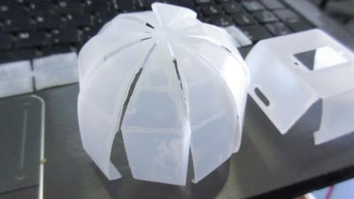
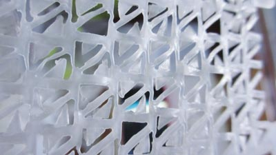
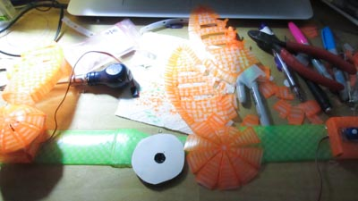

Tele-op Headband v0.2
For v0.2 of the Headband there were some key changes that I wanted to make:
- Lighter weight
- Laser cut design
- 6 DOF IMU
- LEDs in wings
If you tuned in to the Final Projects pt 1 and pt2, you might have seen a bit of the Headband v0.2! When it moved, it was reacting to the movement of my head. Here's a vine vid of it in action:
The final result ended up being quite light weight. Though the front part of the band sticks out a whopping 2.7cm because of the perfboard for the leds. The wings are 13.5cm tall.
Design & Sheet Metal Tool
This is what all of the pieces look like:
These are the cut lignes for the laser cutter:
These are the score lignes for the laser cutter:
Here was the test assembly that was used to visually make sure everything will fit together
The sheet metal tool in Autodesk Inventor is pretty cool. This was the servo holder generated by folding some pieces:
Wing servo cover:
Wing:
Here are the Inventor design files and the drawings
Laser Cutting HDPE
For selecting the material, I was debating between delrin and HDPE. HDPE = high density polyethylene.
HDPE
One of the challenges of laser cutting HDPE is that it absorbs the heat from the laser beam and melts the material. The deformation from the melting sometimes results in the next portion of the cut not being exactly right. It is very flexible, and has a nice smooth surface. ~1/32" thickDelrin
Delrin is easier to laser cut, but it can also shatter if there is an impact. Since this is a headband, it's a little worrisome to possibly have shards of it near your eyes. It also did not have the same smooth surface texture as HDPE.The only reason to not go with HDPE was the laser cutting. Knowing this I was up to the challenge of finding the right values for cutting through the material and also scoring it with the laser cutter.
For the laser cutting, the metal bottom tray was used instead of the honeycomb one. The HDPE was attached down to it using the rulers as clamps as well as magnets
Settings
The settings that I ended up using for cutting were:- Speed: 30%
- Power: 90%
- Frequency: 400 Hz
- Speed: 90%
- Power: 60%
- Frequency: 60 Hz
Here was all of the testing:
The material gets melted so much that it forms little strands on the edge of the pieces:
Example of score lines in action:
Can you see what pieces were cut here?
The cover for the wing and the servo holder!
Another photo of the melted strands

Trying to laser cut small features in HDPE did not work well. All of the edges melted close together
The HDPE was curled in a roll, so for some of the pieces there was a curve in them. This mattered for the wings, for which directions the scored tabs were bent.

Assembly
Here is how the pieces were assembled
Pieces hot glued together (is there a bettery way to do this?). The coloured design was added prior. I hand drew it with neon sharpie. The reason why I had to hand draw it was because the sharpie did not fit into the holder for an xy plotter robot (Watercolor Bot), and didn't have access to a 3d printer at that instant (at night) to make one. In the future this will be drawn by a bot.
The servos added to the servo holders
Bottom view:
Little place for the wire:
Here's how the servo holder folded over and on to the band:
There's so many colours on the desk!!!!!!!!!!!
The leds for the wings are bent to an angle. This way they will light them up better
LED inside of the wing
Here's what it looks like lit up
It's neon sharpie that is supposed to florese under UV light. It sort of glows with blue colour
Side view of wing
Here was the start of assembling the band of leds for the front. Ran in to some problems doing it this way though. Whenever trying to solder the wires together, another wire would fall off. It took 2h to just make these 3 leds work
The evil mad scientists suggested to attach the leds to perfboard, and it would be easier to solder. To cut the board, used these HUUUGE scissors
Here's what the small perfboards look like
One downside to using the perfboards is that they did add a bit of height to the leds
Top view
Servo back angle view. At that moment I did not have a better way of mounting the servo horn other than cardboard and hot glue. Next time it will be different.
Placement of the microcontroller
Is there a better way to be able to attach these pin headers to the band?
Servo side view
Wing cover front view. The shape stuck out too much, so I cut down two of the folds
Front view lit up

Closer view of front view
"Electronics"
Electronics (not really)
The electronics are breakout boards made and designed by someone else. In the future I want to mill my own circuit boards for this and have the components to solder on to it. Check out Input Devices week for the boards I was trying to design.
- Pro Trinket (ATmega328 with Optiboot)
- ADXL335 (Accelerometer)
- L3GD20H (Gyro)
- Xbee 1mW Series 1
- Xbee breakout board
- 7x 5mm bullet pixel leds
- 2x micro servos (*Note: Looks like these insanely went up in price...)
- Pulse sensor
- 2x tactile buttons
Code
Sorry the code is horrible. I cleaned up the formatting a bit, but it can still be a lot better. Disappointed because I couldn't get any readings from the accelerometer, so there isn't much of any fun motion tracking. Instead, just comparing the gyro to a threshold to detect the movements. There isn't anything complicated or original in the code. The reason why the code is horrible is because I was in a rush to finish this for the final project.
Libraries used:
- Adafruit_L3GD20
- Adafruit_NeoPixel
- Adafruit_TiCoServo
- Streaming
- Promulgate
- SoftwareSerial
- Wire
For a jist of what is going on, here is what's inside the loop:
current_time = millis();
updateGyro();
checkGyroBounds();
detectMotionZ();
detectMotionX();
wingWiggleBehaviour();
heartbeatBehaviour();
checkCommunication();
The wing wiggle behaviour is only called every 7 seconds, as long as the last gyro trigger was more than 3 seconds ago.
You can download the code here.
Mistakes Made
-
Laser cutting small features in HDPE
-
Forgot to increase the length of the pieces to account for the curvature
-
Not making a dedicated electronics board for it
-
Receiving garbled messages over Xbee RX (still debugging)
-
Marks your head if you wear it too long
-
Not checking if a sharpie could fit into xy plotter holder
-
Trying to solder 3 wires onto a short place without a perf board
-
Hot gluing servo horn to cardboard
-
Wing cover stuck out too much
-
LED on other wing doesn't light up (still debugging)
-
Accelerometer did not update values (still debugging)
Ideas for Headband v0.3 & v0.4
For v0.3 I mainly want to do three things: make the code better, clean up the wiring, and figure out why the led on the other wing and accelerometer does not work
For v0.4, if I ever get HDPE and access to a laser cutter again, I want to cut the cover pieces to the correct dimensions. As well as some other fixes and improvements.
Another thought is that one of the weaknesses for the HDPE was the heat. But this could be used as an advantage. If I create a mold on the cnc machine and then add heat to a piece of the HDPE, it will take shape to the mold. Might be neat to explore this for the band shape and wings.
Files
You can download all the files on Github
Conclusion
The battery life for the Headband is around 4 hours using a 2600mAh cellphone charger battery. This is on "normal" mode when the wings wiggle every 7 seconds and while responding to my movements.
My favourite thing about the Headband is that if I wear it, it usually makes people around me a bit more cheerful, and mostly everyone wants to wear it too. Kind of surprised at this because I made it to control my robots easier inspired by BH6. People seem to have a lot of fun with it even though it's not perfect and very much cobbled together (except for the laser cutting part).
Special thank you to Evil Mad Science for their resources and help